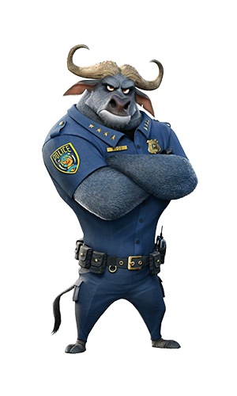
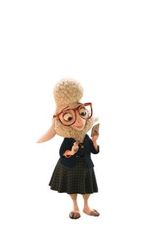

본문콘텐츠영역
- Judy Hopps
- “In Hopps' animation, we tried to celebrate both her rabbitness and her female nature. She's a tough bunny, but she's still feminine. She's sweet, but she's not weak. And when she's on high alert, her natural rabbit instincts take over - ears and nose twitching, foot thumping.”
- Judy is fiercely optimistic and independent. Since childhood, she had harbored a dream to become a police officer, solely for the opportunity to help those in need and make the world a better place. She cares deeply for the well-being of others, and would be more than happy to offer a helping hand to them; this includes her family, friends, Mrs. Otterton's despair over the disappearance of her husband, and even Nick Wilde.


- Nick Wilde
- Nick Wilde is a charming, small-time, con artist fox with a big mouth and a lot of opinions. But when a rabbit cop outsmarts him, he finds himself actually helping her solve a mystery.
- Nick Wilde is shifty, sly, and cunning, traits supposedly common to all foxes. He is easygoing and slick, easily conning and tricking others through his charm and friendly demeanor. He nearly always has a sly smile on his face and seems unfazed throughout most of the film, as he later reveals that because of the numerous years of suffering from prejudice and stereotypes that came with being a fox, he decided on two things: He would never let anyone know they got to him and if the world only ever saw foxes as sly scoundrels then he would be that.
- flash
- Despite his slowness, Flash is a friendly sloth. He is polite to Judy Hopps and speaks quite professionally, which makes him sound more intelligent than he looks. Flash seems to be well acquainted with Nick Wilde and speaks to him in his casual, friendly way.
- gazelle
- Gazelle is one of the most popular celebrities in Zootopia, having many fans, which include Judy Hopps, Clawhauser, and even Chief Bogo. Her importance and popularity stems from the fact that she is very socially-minded and believes in acceptance and equality for all.
- Benjamin
- “I am so sorry. Me, Benjamin Clawhauser, the guy everybody thinks is just a flabby, donut-loving cop stereotyping you...”.
Benjamin Clawhauser possesses a bubbly personality, characterized by enthusiasm, especially for his idol, Gazelle, and also, perhaps to a lesser extent, his job as the "first face that you see when you walk into the ZPD".

- Chief bogo
- Chief Bogo's name originates from the Swahili word for buffalo, which is "mbogo". Initially, Bogo is portrayed as serious, no-nonsense and highly prejudiced. While he acknowledges that there were new recruits amongst them, he refused to go into details because he didn't care.
- Bonnie Stu
- "Mrs. Hopps loves and supports her daughter, but is a hare nervous about Judy moving to Zootopia to become a big-city police officer. Stu Hopps is a carrot farmer from Bunnyburrow. Along with Mrs. Hopps, he is worried about Judy moving to Zootopia and the untrustworthy big-city mammals who live there—especially foxes."
- Finnick
- Finnick is first seen in his elephant costume in Jumbeaux's Café posing as Nick Wilde's son. Nick is trying to buy a Jumbo-pop for Finnick, saying that his "son" loves all things elephant and wants to be one, but the owner Jerry Jumbeaux, Jr., refuses to serve them because they are foxes, which makes Finnick toot his costume's horn in sadness.
- Mayor Lionheart
- Mayor Leodore Lionheart is the noble leader of Zootopia, who coined the city’s mantra that Judy Hopps lives by: "In Zootopia, anyone can be anything." Lionheart is a large, imposing lion with golden brown fur. He has brown eyes, a large black nose, a big chin, and long whiskers. Lionheart wears a pale blue business shirt and a red tie; over this he wears a deep blue business suit.

- Dawn Bellwether
- “We're on the same team, Judy! Underestimated, underappreciated....Aren't you sick of it?! Predators - they may be strong and loud, but prey outnumber predators ten to one. Think of it; 90% of the population, united against a common enemy. We'll be unstoppable!”
- Yax
- "Yax the Yak is the most enlightened, laid-back bovine in Zootopia. When Judy Hopps is on a case, Yax is full of revealing insights. He is very modest."
- Yax is a laid-back, enlightened, and modest yak. He speaks in a soothing hippie voice. He seems to be smart, unknowingly giving Judy the information to help solve the case even though he gave Nangi all the credit.

- Mr Big
- “My child, we may be evolved, but deep down, we are still animals.”
- Mr. Big is an old male Arctic shrew and a supporting character in Zootopia. He is the father of Fru Fru, the father-in-law of Fru Fru's husband, and the soon-to-be grandfather of Judy. He is also the leader of his mafia.